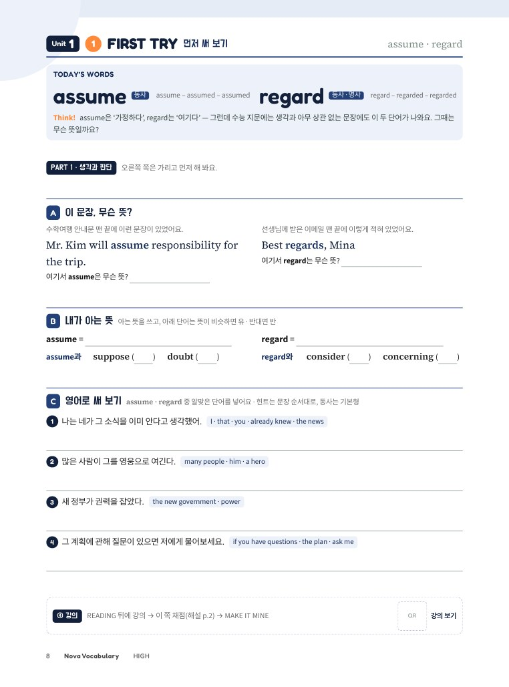
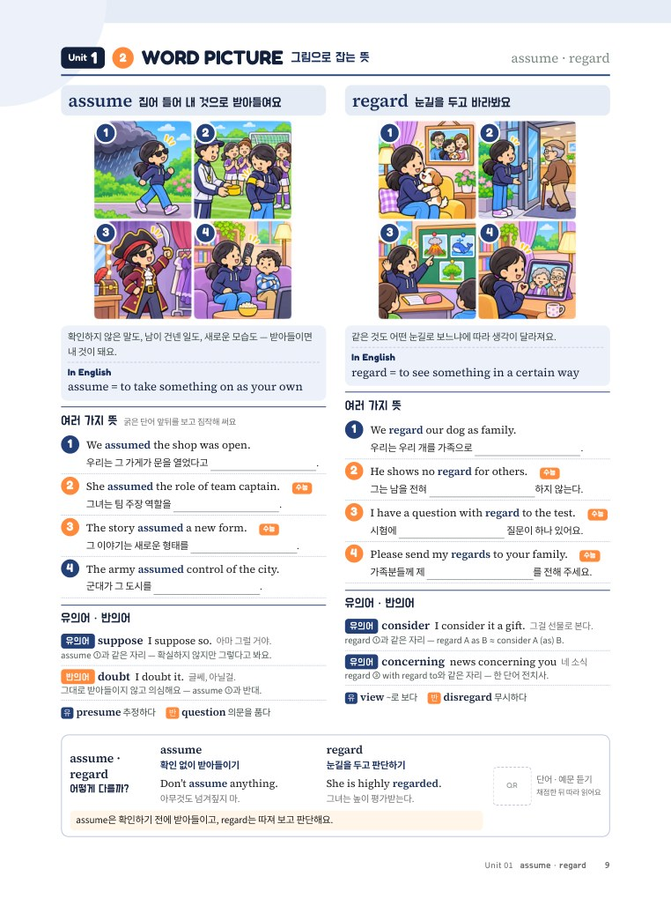
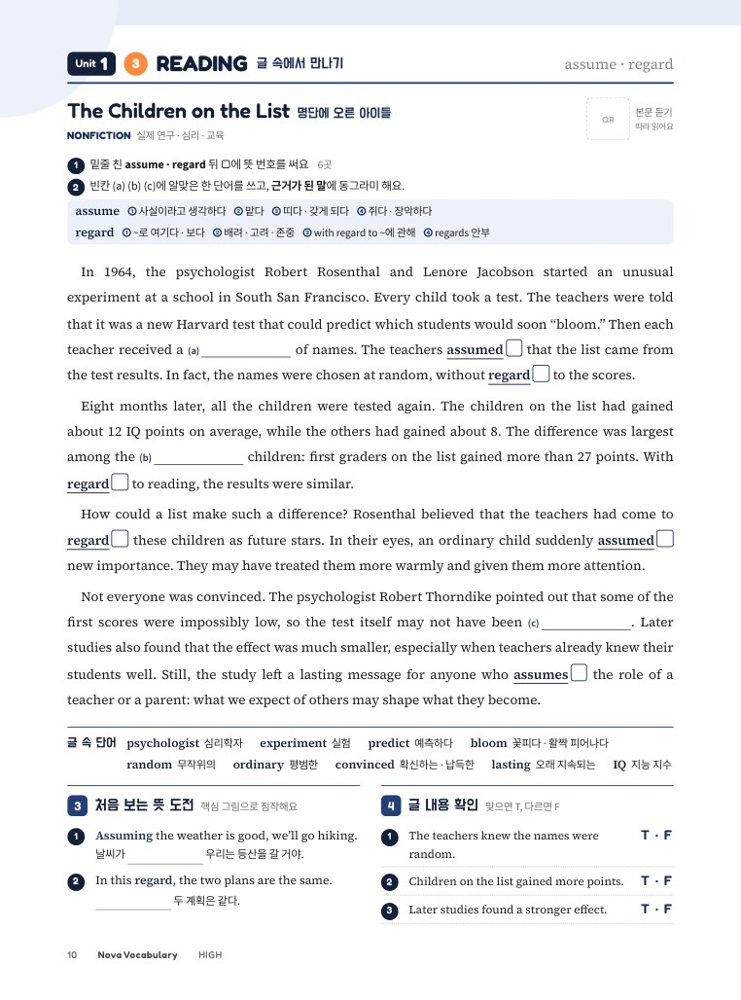
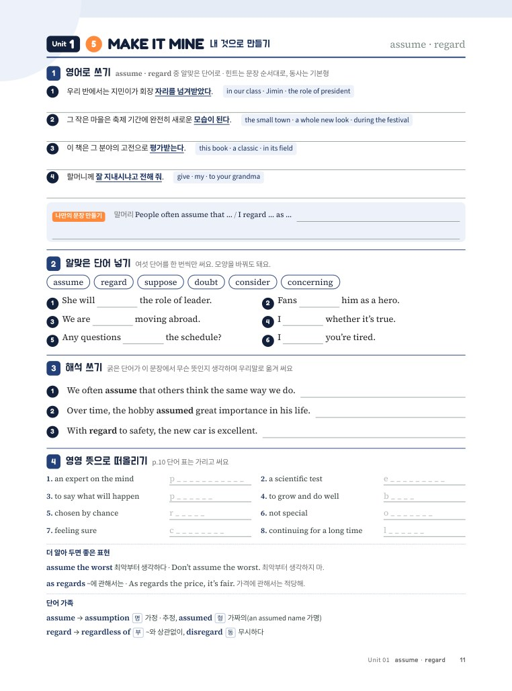
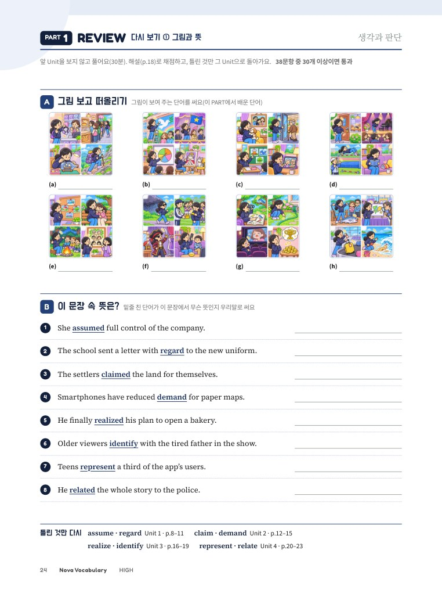
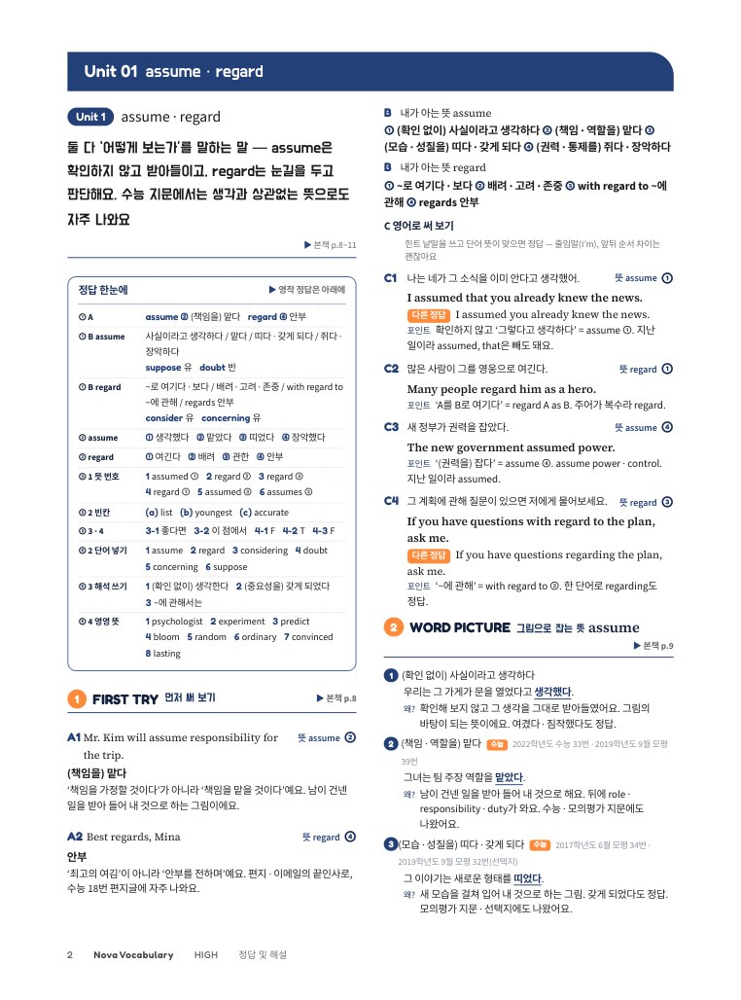
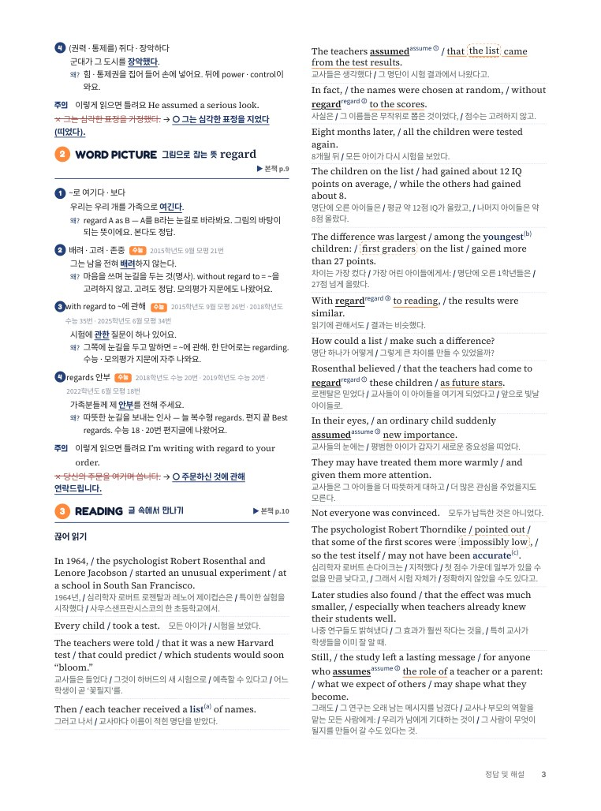

Nova Vocabulary
아는 단어인데 수능 지문에서 막힐 때
차례
ContentsUnit 하나 = 짝 단어 두 개. 단어 옆 한 줄은 두 단어가 왜 짝인지예요. 찾는 단어가 있으면 여기서 쪽을 보고 펼쳐요.
구성과 특징
How to Use This Book한 Unit은 쉬워 보이지만 여러 뜻으로 쓰이는 짝 단어 두 개를 네 쪽에 걸쳐 공부해요. 먼저 써 보고 → 그림으로 뜻을 잡고 → 글 속에서 만나고 → 강의를 본 뒤 내 것으로 만드는 같은 흐름이 책 끝까지 이어져요.








공부법
Unit 하나(네 쪽)를 하루나 이틀에 공부하면 알맞아요. 순서대로 하고 통과 기준을 넘으면 다음 Unit으로 가요.
- FIRST TRY — 오른쪽 쪽은 가리고 먼저 써 봐요. 모르면 짐작해서 — 틀린 문장이 가장 많이 배우는 문장이에요.
- WORD PICTURE — 두 단어의 핵심 그림을 보고 여러 가지 뜻의 빈칸을 채워요. ‘어떻게 다를까?’ 띠로 두 단어의 차이를 정리해요.
- READING — 글을 읽으며 밑줄마다 뜻 번호를 쓰고, 빈칸에는 알맞은 한 단어를 써요. 처음 보는 뜻과 내용 확인(T · F)도 풀어요.
- 강의 보기 · 채점 — QR로 강의를 보며 핵심 그림과 뜻을 다시 정리하고, 앞의 세 쪽을 해설로 채점해요. FIRST TRY C에서 틀린 문장은 그 쪽 ‘다시 쓰기’에 다시 써요.
- MAKE IT MINE — 네 가지 문제를 풀고 채점해요. 틀린 문항은 해설의 이유를 꼭 읽어요.
다시 ① 틀린 문항을 해설 보기 전에 한 번 더 → ② WORD PICTURE의 핵심 그림을 다시 보기 → ③ 해설의 이유 읽기
네 Unit을 마치면 REVIEW 두 쪽을 풀어요. 틀린 것만 그 Unit 쪽으로 돌아가 핵심 그림과 여러 가지 뜻을 다시 봐요.
진도표
My Plan한 칸을 마칠 때마다 □에 ✓. REVIEW는 맞힌 개수를 적어요(30개 이상 통과).
| FIRST TRY | WORD PICTURE | READING | 강의 | MAKE IT MINE | 마친 날 | |
|---|---|---|---|---|---|---|
| Unit 01assume · regard | □ | □ | □ | □ | □ | / |
| Unit 02claim · demand | □ | □ | □ | □ | □ | / |
| Unit 03realize · identify | □ | □ | □ | □ | □ | / |
| Unit 04represent · relate | □ | □ | □ | □ | □ | / |
| REVIEW 1 | 맞힌 개수 ____ / 38 | / | ||||
| Unit 05establish · maintain | □ | □ | □ | □ | □ | / |
| Unit 06manage · operate | □ | □ | □ | □ | □ | / |
| Unit 07engage · attend | □ | □ | □ | □ | □ | / |
| Unit 08apply · treat | □ | □ | □ | □ | □ | / |
| REVIEW 2 | 맞힌 개수 ____ / 38 | / | ||||
| Unit 09mass · volume | □ | □ | □ | □ | □ | / |
| Unit 10scale · major | □ | □ | □ | □ | □ | / |
| Unit 11extend · release | □ | □ | □ | □ | □ | / |
| Unit 12store · reserve | □ | □ | □ | □ | □ | / |
| REVIEW 3 | 맞힌 개수 ____ / 38 | / | ||||
| Unit 13relative · objective | □ | □ | □ | □ | □ | / |
| Unit 14institution · discipline | □ | □ | □ | □ | □ | / |
| Unit 15perspective · approach | □ | □ | □ | □ | □ | / |
| Unit 16function · means | □ | □ | □ | □ | □ | / |
| REVIEW 4 | 맞힌 개수 ____ / 38 | / | ||||
| Unit 17yield · bound | □ | □ | □ | □ | □ | / |
| Unit 18drive · fix | □ | □ | □ | □ | □ | / |
| Unit 19settle · decline | □ | □ | □ | □ | □ | / |
| Unit 20cell · material | □ | □ | □ | □ | □ | / |
| REVIEW 5 | 맞힌 개수 ____ / 38 | / | ||||
| Unit 21grant · exhaust | □ | □ | □ | □ | □ | / |
| Unit 22attribute · pose | □ | □ | □ | □ | □ | / |
| Unit 23apparent · otherwise | □ | □ | □ | □ | □ | / |
| Unit 24relief · medium | □ | □ | □ | □ | □ | / |
| REVIEW 6 | 맞힌 개수 ____ / 38 | / | ||||
이 책에 나오는 말
Words about Words문제와 해설에 자주 나오는 말이에요. 모르는 말이 나오면 이 두 쪽으로 돌아와요.
| 이름 | 하는 일 | 예 |
|---|---|---|
| 명사 | 사람 · 물건 · 때 · 생각의 이름 | a claim 주장 · oil reserves 매장량 · a means 수단 |
| 동사 | 움직임이나 하는 일 | assume 맡다 · yield 내다 · settle 해결하다 |
| 형용사 | 모양 · 상태 · 느낌을 꾸며 줘요 | a major change 큰 · an apparent calm 겉보기의 · relative 상대적인 |
| 부사 | 어떻게 · 얼마나 · 언제를 더해 줘요 | apparently 듣자 하니 · otherwise 달리 — 여러 가지 뜻과 단어 가족에서 만나요 |
같은 단어도 품사가 바뀌면 뜻이 달라져요. objective는 형용사면 ‘객관적인’, 명사면 ‘목표’예요. attribute는 명사면 ‘속성’, 동사면 ‘~ 탓으로 보다’예요(강세도 달라요).
| 이름 | 예 | 언제 써요? |
|---|---|---|
| 기본 모양 | apply · settle · yield | 사전에 나오는 모양 |
| -s 모양 | applies · settles · yields | 그 · 그녀 · 그것이 지금 할 때 |
| 지난 모양 | applied · settled · yielded | 이미 한 일(~했다). 규칙(-ed)과 불규칙이 있어요 |
| -ing 모양 | applying · settling · yielding | ~하고 있다 · ~하는 것 |
Unit마다 오늘의 단어 옆에 모양이 바뀌는 꼴을 적어 두었어요. apply는 y를 i로 바꿔 applies · applied, manage · settle은 e를 빼고 managing · settling이에요.

| 이름 | 뜻 | 예 |
|---|---|---|
| 짝 단어 | 함께 보면 덜 헷갈리는 두 단어. 이 책은 한 Unit에서 짝 두 개를 함께 봐요. | assume(확인 없이 받아들이다) ↔ regard(눈길을 두고 판단하다) |
| 여러 가지 뜻 | 단어 하나가 가진 여러 뜻. 이 책에서는 ① ② ③ ④ 번호를 붙여요. | regard ① 여기다 ② 배려 ③ ~에 관해 ④ 안부 |
| 핵심 그림 | 여러 가지 뜻이 모두 뻗어 나오는 하나의 그림. 처음 보는 뜻도 이 그림으로 짐작해요. | regard = 눈길을 두고 바라봐요 |
| 수능 배지 | 평가원 수능 · 모의평가 지문에 그 뜻으로 나온 적이 있는 뜻. 기본 뜻 ①에는 달지 않아요. | regard ③ with regard to — 해설에 몇 학년도 몇 번 |
| 유의어 · 반의어 | 뜻이 비슷한 말 · 뜻이 반대인 말. 비슷해도 쓰임이 조금씩 달라요. | assume ≈ suppose · assume ↔ doubt |
| 영영 뜻 | 영어 단어를 쉬운 영어로 풀어 쓴 뜻. | predict = to say what will happen |
| 문맥 | 단어 앞뒤의 말과 글의 흐름. 같은 단어라도 문맥에 따라 뜻이 달라져요. | yield a big harvest → 내다 · yield to pressure → 굴복하다 |
| 짝 말 · 단어 가족 | 다른 말과 붙어 새 뜻을 만드는 표현, 한 뿌리에서 나온 단어들. MAKE IT MINE 아래에 모았어요. | assume the worst 최악부터 생각하다 · regard → regardless of ~와 상관없이 |